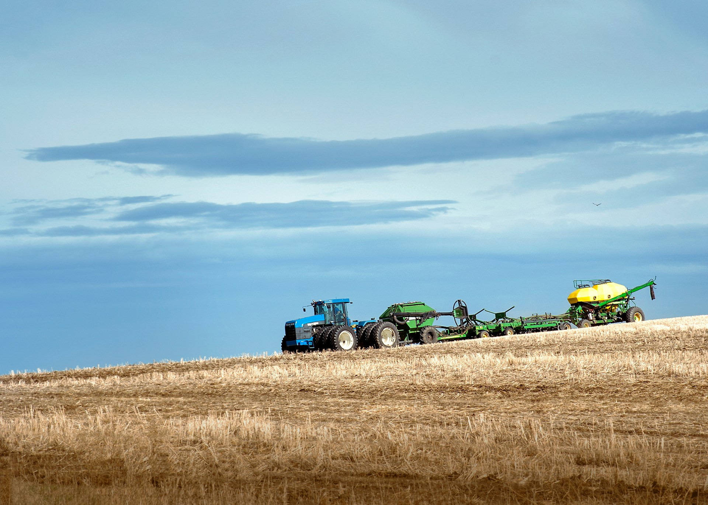
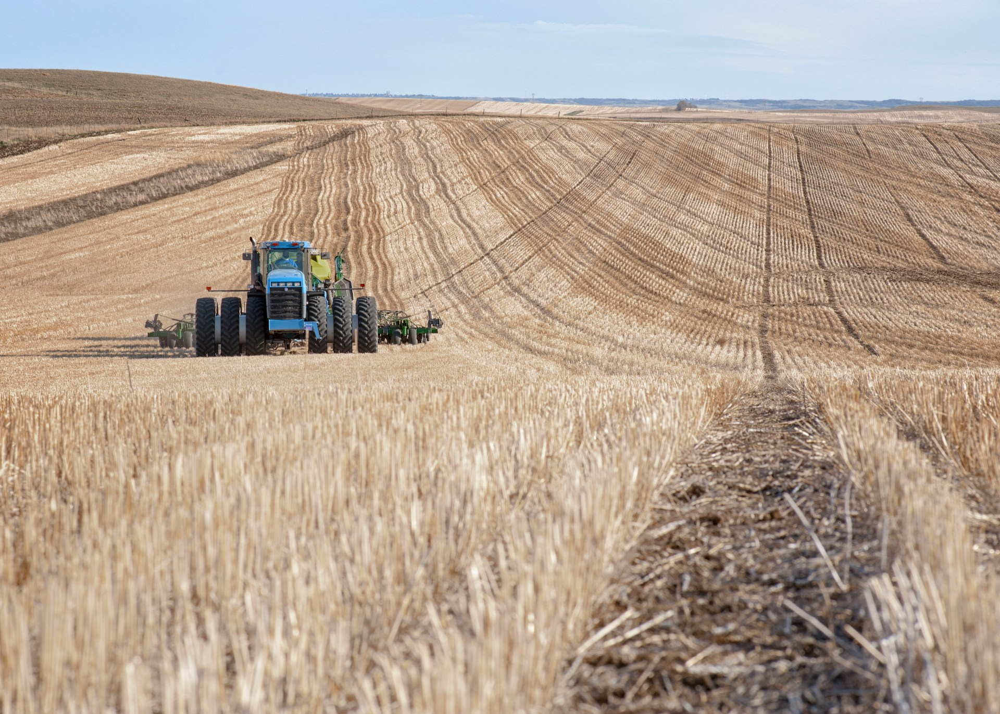
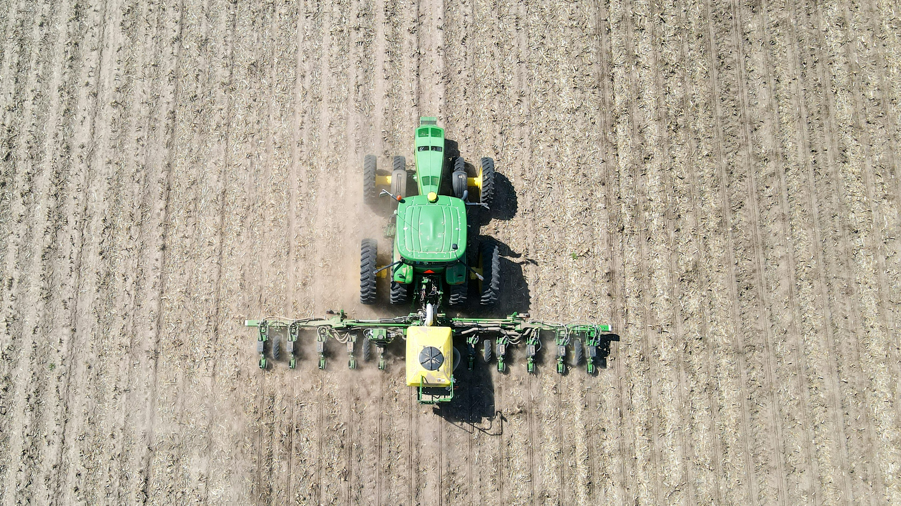
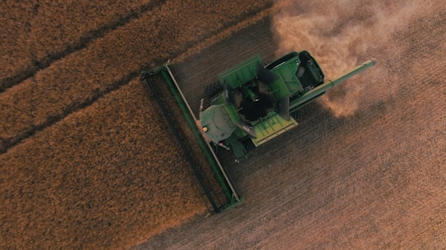
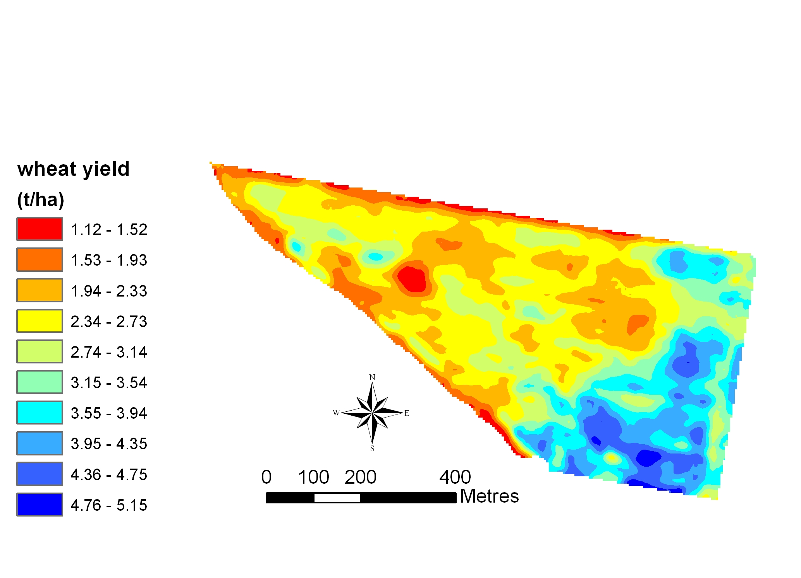
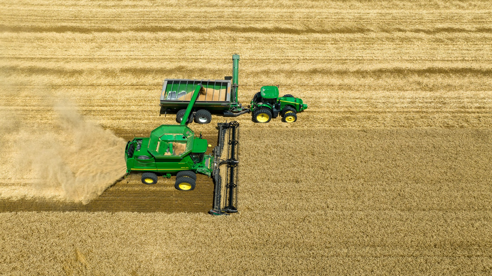

Introduction to PA
AGRI4401 - Precision Agriculture
Gustavo Alckmin
July 1, 2024
Welcome to AGRI4401
Before we start with any content.
My name is Gustavo
know that I am here to help!
- This is a stress-free unit.
- We are colleagues.
Don’t miss the opportunity to listen to Julia Payne (FieldView) and Anna Biddle (John Deere)
Don’t miss the opportunity to visit John Young (Wyening Mission Farm)
Learning is moving out of your comfort zone
Why should you be interested in Precision Agriculture?
- Precision Agriculture is a rapidly growing field that is revolutionising the way we farm.
- There is window of opportunity for you to be part of this revolution.
- how will you join the labour market?
- Some traditional roles (e.g. agronomists) are being replaced by new roles (e.g. data scientists, remote sensing specialists, etc.)
- future proof your career.
- You can scale-out (reach more people) by using technology.
- and work from rural/urban areas.
- Salary of a geospatial data scientist ~ $160,000.year-1.
- The technology reached maturity and is now affordable (low barrier to entry/training).
- self-study! AgTech specialization
AGRI4401 Precision Agriculture Aims
This is an introductory unit!
- Understand the impact/causes of variability on crop production;
- Understand how to act/manage variability;
- Present you to the state-of-art (so you can make $$)
If you never operated farm machinery, feel free to play [Farming Simulator].{text-uwa-blue} during the lunch breaks!
If you would like to like learn about Wheat Production
Put in the effort(and it will pay $$!)
Assignments and Online Quiz
- Assignment 1 & 2: Due 07th August 2024, (55%, 25% of final mark, respectively)
- Online Quiz: Due 29th July 2024 (20% of final mark)
- Example Assignments are available online.
- Goal is to use PA tools to assist in your agronomic reasoning.
- Data will be made available on the third week.
- Real data from Wyening Mission farm (!field trip).
- Use GenAI as a personal tutor.
- My advice: put in the effort.
Course Outline
| Week | Topic | Lecturer |
|---|---|---|
| 1 Mon | Intro to Precision Ag | G Alckmin |
| 1 Tue | Kriging in R | M Renton |
| 2 Mon | Remote Sensing | G Alckmin |
| 2 Tue | Bayer FieldView | J Payne |
| 3 Mon | Drone Data | G Alckmin |
| 3 Tue | Wrap-up | G Alckmin |
| Week | Topic | Lecturer |
|---|---|---|
| 1 Mon | QGIS Basic | G Alckmin |
| 1 Tue | QGIS Interpolation | M Renton |
| 2 Mon | Planet Explorer | G Alckmin |
| 2 Tue | John Deere | A Biddle |
| 3 Mon | Radiometrics | M Leopold |
| 3 Tue | Wrap-up | G Alckmin |
Wednesday July 10th - Field Trip to Wyening Mission Farm (!submit the form).
Today’s Agenda
- What is Precision Agriculture?
- Site-specific crop management
- Global Navigation Satellite Systems (GNSS)
- Applications
- Digital Agriculture
- Connectivity
- Decision Support Platforms
- State-of-the-art
Why Precision Agriculture?
Why the original name was Precision Agriculture and not Accuracy Agriculture?
Any ideas?
Precision vs. Accuracy !
Agriculture as a gray-box system.
Precision Agriculture [1]
Crop Production Timeline
gantt
title Fictitious Wheat Production Timeline in Western Australia
dateFormat YYYY-MM-DD
axisFormat %b %d
section Pre-Sowing (Autumn)
Herbicide Application :done, h1, 2024-04-01, 2024-04-15
section Sowing (Late Autumn - Early Winter)
Sowing :active, sow1, 2024-05-01, 2024-06-01
Fertilizer Application 1 :active, f1, 2024-05-01, 2024-06-01
section Pre-Canopy Closure (Early Winter)
Herbicide Application :active, h2, 2024-06-01, 2024-06-30
section Tillering Stage (Mid-Winter)
Fertilizer Application 2 :active, f2, 2024-06-15, 2024-07-15
section Flag-Leaf Stage (Late Winter - Early Spring)
Fungicide Application :active, fg1, 2024-08-01, 2024-08-15
section Grain Filling Stage (Spring)
Fertilizer Application 3 :active, f3, 2024-09-01, 2024-10-01
section Harvest (Late Spring - Early Summer)
Grain Harvest :active, h3, 2024-11-01, 2024-12-01
- Industrial Process
- Understand processes and improve precision of each.
- You cannot manage what you cannot measure (Peter Drucker).
Precision Agriculture [2]
In each step of the process, there are key operational procedures, such as:
- seed rate;
- fertiliser placement:
- seed depth;
- seeding overlap;
- inter-row spacing;
As conditions change, the optimal response of these operations will also change.
A form of PA where decisions regarding resource application and agronomic practices are better tailored to soil and crop requirements as they vary within the field
Precision Agriculture [3]
flowchart TD
B{Variable Rate Process}
B -->|Soil Type| C[Determine Seed Rate]
B -->|Soil Moisture| D[Determine Seed Depth]
B -->|Geospatial Positioning| E[Minimize Seeding Overlap]
B -->|Fertiliser Type| F[Determine Placement]
C --> G[Calibrate Seeder for Seed Rate]
D --> H[Calibrate Seeder for Seed Depth]
E --> I[GNSS Signal Quality]
F --> J[Fertiliser Placement and Rate]
G --> L[Monitor Sowing Process]
H --> L
I --> L
J --> L
L -->|Adjustments Needed| M[Make Real-Time Adjustments]
L -->|No Adjustments Needed| N[Complete Sowing]
Improving ‘uniform’ management. These process can be monitored and precision improved.
Precision Agriculture [4]
Site-specific crop management (SSCM)
- Before doing SSCM, do the basics right!
- The PA technologies that are adopted are the ones that improve the user experience.
- It has to pay!
- The best investment is - usually - lime and urea (with NBPT)
:. If all is working well, then you can start with SSCM.
Continuous Improvement
- Identify limiting factors;
- Which factors can be changed? Soil fertility, seed depth, variety, Cropping Inputs
- Which factor must be managed?
- Terrain, soil type, soil depth, waterlogging, etc.
This is where precision (repeating the same process in the same way) is key!
Global Navigation Satellite Systems (GNSS) [1]
History:
- Global Positioning System (GPS)
- Developed by the US Department of Defense in the 1970s
- Signal degration (Selective Availability) was removed in 2000.
- GLONASS (Russia)/Galileo (EU)/Beidou (China)/SouthPan (Australia),
- RTK (Real Time Kinematic) - cm accuracy
- Base Station (fixed) and Rover (mobile/tractor)
Impact on agriculture: less overlap, tramlines (constrained soil compaction), no row skipping, less fatigue, more efficient use of inputs.
Global Navigation Satellite Systems (GNSS) [2]
Error sources that need to be considered:
- Selective availability;
- Satellite geometry;
- Satellite ephemeris and clock;
- Atmospheric transmission delays;
- Multipath (trees/buildings); and
- Receiver noise.
- Drift
Improving accuracy/precision is an active area of research. SouthPan
!Watch videos on LMS!
Global Navigation Satellite Systems (GNSS) [3]
Uses in agriculture
- Autosteer systems;
- Yield/VRA/As-applied maps;
- Sampling/Scouting;
- Management zones;
It is extremely difficult to operate large broadacre cropping machinery without accurate geospatial positioning.
 
Global Navigation Satellite Systems (GNSS) [4]
Coordinate Reference Systems (CRS):
- Projecting the Earth onto a flat surface;
- Different CRS optimise either area, angle, distance, and a location;
- More information on Gentle Introduction to GIS.

Let’s take a break
Applications [1]
Controlled Traffic:

Tramlines
Tramlines
Applications [2]
Sensors: In the past, these sensors would often be used in naive integrations. Nowadays, raw data is pre-processed and more reliable. Calibration is key!
RTK & IMU
Mass Flow
Moisture Sensor
Telemetry
Digital Scale
NIR Sensor
Applications [3]
Yield Mapping:Key uses:
- Estimating nutrient removal;
- Estimating yield potential (genotype vs environment - GxE)
- Land valuation;
- Enables on-farm research.
 
Applications [4]
Interpreting Yield Maps:
- Straight lines are man-made (e.g. tramlines, fertiliser blockage, headlands, etc.) Irregular patterns are natural (e.g. soil type, waterlogging, disease, insect, weeds etc.)
- Pattern recognition is key to interpreting yield maps. Soon, we will be able to use machine learning to help us with this task.
Applications [5]
Correcting errors in yield maps
Measured variables:
- Mass Flow Volume;
- Moisture content;
- NIR Protein content;
- Distance traveled;
Error sources:
- Position (GNSS - RTK)
- True position of yield (lag time)
- “Errors” due to headlands or harvesting pattern.
- Harvesters with distinct calibration (bias) Requires harmonisation/blending of data.
Solutions:
- Active Yield (John Deere/Continuous Calibration),
- On farm double checks (weighing when carting the grain - scales).
Applications [6]
Agronomic Decision:
- Fertiliser rate, timing, placement;
- Seed rate, depth, variety;
- Spatial trends should be similar within different crops.
After the cause is identified, the best strategy can be implemented.
Farming Simulator
Digital Agriculture
Combines precision agriculture with remote sensing, data science, connectivity ,and decision support systems.
John Deere Operation Center, Climate FieldView, AgWorld, etc.
 
State of the art. [1]
- With global connectivity (e.g. Starlink) telemetry, and data are sent to the cloud for real-time analysis.
- Decision Support Systems allow APIs for data science analysis.
- Pattern recognition and Deep Learning should soon enable agronomic insights.
- Granularity of data (e.g. correct soil type/festility) is a limiting factor for now.
- Increasing autonomy in machinery and data collection.
- Decreasing size of machinery (whenever full autonomy is achieved)
- Target use of herbicides (See and Spray)
- On the go machinery adjustment
State of the Art [2]
Opportunities:
- Development of on-farm experimentation, so global data can be used to improve local conditions.
- Repairing machinery and sensors on the field.
- Understanding the limitation of sensors and methods.
- Developing new sensors and methods.
Your future and well-paid job!